Interferencja fal
Interferencja fal - szczególny przypadek superpozycji fal o jednakowej częstotliwości, które pochodzą z dwóch różnych źródeł
Jeśli fale mają jednakową częstotliwość, prędkość i są zgodne w fazie (jednocześnie pojawiają się u nich “grzbiety fali”), mają też do przebycia jednakową drogę, to będą docierać na miejsce w jednakowym czasie. Dlatego będą się one wzmacniać, powstanie fala o dwa razy większej amplitudzie. Jeśli natomiast zajdzie taka sytuacja, że fale nie będą miały jednakowej drogi do pokonania, czyli będą niezgodne w fazie, to będą się one wzajemnie wygasały, w tych miejscach będzie panowała cisza.
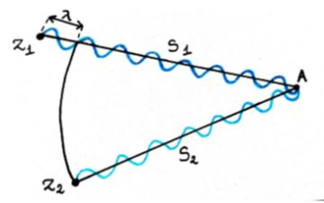Na rysunku widzimy dwa źródła fali, które muszą przebyć różne drogi, aby dotrzeć do punktu A. Fale z Z1 mają dłuższą drogę do przebycia niż te wyruszające z Z2. Jeśli jednak różnica dróg będzie równa długości fali, to będą się one nadal wzmacniać w punkcie A.
Δs = s1 - s2 = λBędzie to działało również dla 2λ, 3λ, itd.. Możemy więc wysnuć wniosek, że maksymalne wzmocnienie fal będzie występowało jeśli różnica dróg źródeł do danego punktu jest wielokrotnością liczby długości fal:
Δs = n*λGdzie n należy do liczb naturalnych
Spróbujmy teraz opisać powyższy warunek za pomocą kąta:
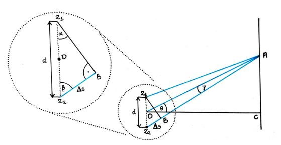Gdzie:
θ - miejsce największego wzmocnienia fal, między prostą DC a prostą DA
DC - symetralna odcinka łączącego źródła
DA - prosta, przechodząca przez punkt, z którego obserwujemy fale i środek odcinka łączącego źródła fal
Spróbujmy wyznaczyć sobie kąt theta, korzystając z trójkąta Z2AD
(90°+ θ) + γ + β = 180° θ + β + γ = 90°Załóżmy, że A znajduje się daleko od źródła fali. Oznacza to, że s1 i s2 są znacznie dłuższe od d. Możemy więc przyjąć, że ∢Z2AD = γ jest bardzo mały i można go pominąć. Zostajemy z:
θ + β = 90°Wiemy, że trójkąt Z1Z2B jest prostokątny, więc możemy zapisać, że:
β + α = 90°Wiemy też, że ∢Z1Z2B = ∢Z1Z2A
θ + β = β + α θ = αJuż przypomnieliśmy sobie funkcje trygonometryczne, wiemy więc, że:
sinθ = sinα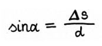
Wiemy z wcześniejszych rozważań, że Δs = nλ, więc:
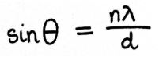Gdzie:
n należy do liczb naturalnych
d - odległość między dwoma źródłami
λ - długość fali
Zależność ta działa dla wszystkich fal, przy założeniu że obserwator jest daleko od źródeł.
Jak powstają fale?
Za każdym statkiem pojawiają się fale, jednak dlaczego się tak dzieje?
Dla uproszczenia przyjmijmy, że nasz kadłub stoi w miejscu, a porusza się tylko woda dookoła niego. Niech wszystkie jej cząsteczki poruszają się z prędkością v0.
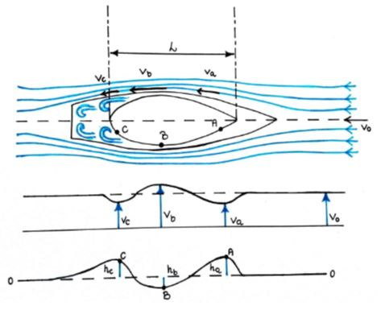Jak widzimy na rysunku w punkcie ,,a” cząsteczki napotykają nagle przeszkodę w postaci dzioba jachtu. W takim wypadku będą one zmuszone zwolnić, więc va< v0.
W punkcie ,,b”, znowu przyśpieszają (cząsteczki wody), gdyż ich przypływ się zwęża. Można to wytłumaczyć na przykładzie rury z wodą, która ma grubszą i cieńszą część, jak na rysunku poniżej. Aby się poruszyć w grubszej części pewna ilość wody będzie musiała przemieścić się o niedużą odległość, natomiast aby tyle samo wody zostało przepchnięte przez cieńszą część rurki, musi ona w tym samym czasie pokonać większą odległość. Właśnie dlatego będzie się ona poruszać szybciej. Oznacza to, że vb > v0.
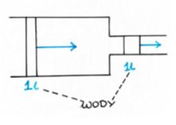W punkcie ,,c” natomiast cząsteczki znowu zwalniają, bo przepływ na powrót im się rozszerza, więc vc < v0. Co więcej va < vc < v0, bo nie zwalniają one aż tak bardzo jak kiedy napotykają przeszkodę w punkcie ,,a”.
Te zmiany prędkości wspaniale przedstawia drugi wykres na pierwszym rysunku.
Aby wyjaśnić sobie powstawanie fal musimy też sięgnąć do prawa Bernoulliego, które lekko przekształcimy:
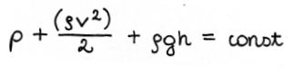Możemy w tym przypadku pominąć p (ciśnienie), dlatego, że nie będzie ono w tym przypadku ulegać zmianie. Zostaje nam więc:
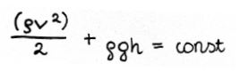Aby ułatwić sobie zapis, skorzystamy z zależności ciężaru od przyspieszenia ziemskiego i gęstości;
γ = ⍴g ⍴ = γ/gMożemy więc zamiast ⍴gh zapisać γh, a zamiast
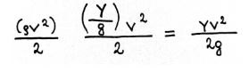Po tych przekształceniach zostaje nam:
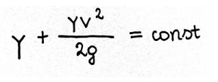Gdzie:
h - wysokość na jakiej znajdują się cząsteczki wody
γ - ciężar wody
v - prędkość cząsteczek
g - przyśpieszenie ziemskie
Właśnie trzeci wykres na pierwszym rysunku, przedstawia nam to jak będzie się zmieniać poziom wody. Wynika to bezpośrednio z prawa Bernoulliego zapisanego powyżej. Jeśli bowiem zwiększymy prędkość, to będziemy musieli zmniejszyć wysokość, bo g się nie zmienia, a w tej sytuacji również γ pozostaje niezmienna. Tak właśnie powstają nam fale. Tworzą się one i przy dziobie jachtu i przy rufie, gdzie te przy dziobie, jak wynika z prawa Bernoulliego, będą mieć większą amplitudę (różnicę wysokość).
Relacja między długością fal poprzecznych a prędkością łodzi
Między prędkością łodzi, a jej długością jest ścisłe powiązanie, które możemy zapisać w postaci równania:
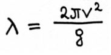Gdzie:
λ - długość fali poprzecznej
v - prędkość łodzi
g - przyspieszenie grawitacyjne Ziemi
Wynika z niego, że jeśli wzrośnie prędkość łodzi, wzrośnie również długość powstającej fali, gdyż reszta danych pozostaje w tym przypadku niezmienna. Spróbujmy teraz przedstawić te relacje w węzłach (knots).
g = 10 m/s2 = 32,8 ft/s2, bo 1 m = 3,28, więc 10*3,28 = 32,8
(ft to oznaczenie stopy, od feet)
Chcemy z naszego wzoru na λ uzyskać wzór na prędkość, więc musimy go przekształcić:
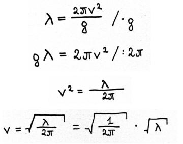Spróbujmy teraz podstawić jakieś dane:
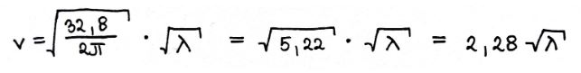Wynik dostajemy w stopach na sekundę. Chcemy go jednak mieć w węzłach (knots) czyli milach morskich na godzinę.
1 mila morska = 6076 ft (stóp)
Chcemy zmienić ft/s na mile morskie/h
1 ft/s = 1*[(1/6076) / (1/3600)] = (1/6076)*(3600/1) = 0,592 knots
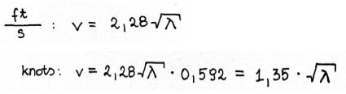Spróbujmy wykorzystać nasze równania żeby znaleźć speed to length ratio (stosunek prędkości jachtu do pierwiastka z długość kadłuba). Zacznijmy od przekształcenia naszego równania.
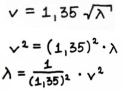Oznaczmy długość kadłuba jako L, powstanie nam stosunek
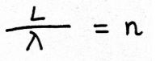Jeśli podstawimy do tego nasz wcześniejszy wzór na λ, powstanie nam:
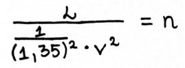Teraz przekształćmy to lekko:
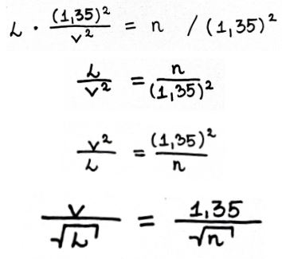Opór falowy
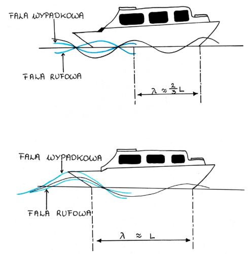Na rysunku a widzimy falę dziobową o długości λ = L, czyli równej długości kadłuba. Skoro wiemy już jak tworzą się fale, to spróbujmy sobie wyjaśnić co to opór falowy.
Oznacza to, że będzie ona zgodna w fazie z falą rufową. Będą się więc one wzmacniały.
Na rysunku b widzimy natomiast falę dziobową o długość λ = (⅔)L, nie będzie więc ona zgodna w fazie z falą rufową, będą więc one interferować destruktywnie.
Aby wytworzyć falę łódź musi wykorzystać energię, więc im większe fale tym więcej ,,zmarnowanej” energii. Jeśli więc fale będą, tak jak na pierwszym rysunku, się wzmacniały to jacht będzie musiał oddać więcej swojej energii. Jeśli natomiast będzie, tak jak na drugim rysunku, będą one intereferowaly destruktywnie, to fala będzie mniejsza, czyli pochłonie ona mniej energii. Dla łodzi, więc o wiele korzystniejsza jest sytuacja b, gdzie to fale się wzajemnie ,,wyciszają”.
Co się dzieje gdy dwie łodzie płynął koło siebie?
Jaki wpływ będą miały fale na dwie płonące koło siebie łodzie?
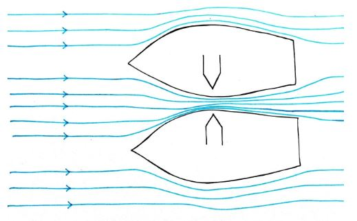Wydawałoby się, że łodzie przedstawione na powyższym rysunku będą się odpychać. W rzeczywistości jednak będą się one przyciągać. Jak już wytłumaczyłam, mówiąc o powstawaniu fal, gdy zmniejsza się szerokość przepływu, zwiększa się prędkość z jaką płynie woda. Z prawa Bernoulliego wiemy, że w takim wypadku ciśnienie będzie musiało się zmniejszyć.
½ ⍴v2+ρgh = constWidzimy to szczególnie dobrze przy analizie równania, aby pozostało ono const (wartość się nie zmieniła), gdy prędkość się zwiększa, ciśnienie się zmniejsza. Co to oznacza dla naszych łodzi? Będą one odczuwały mniejszy nacisk na burty , bo zmniejszy się ciśnienie. Właśnie dlatego łodzie zaczną się do siebie zbliżać. Co ciekawe im bliżej siebie będą kadłuby, tym mocniejszy będzie ten efekt.